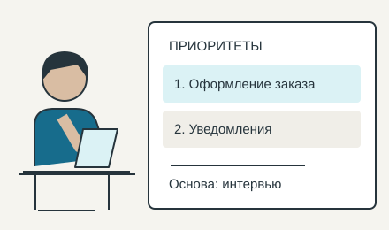
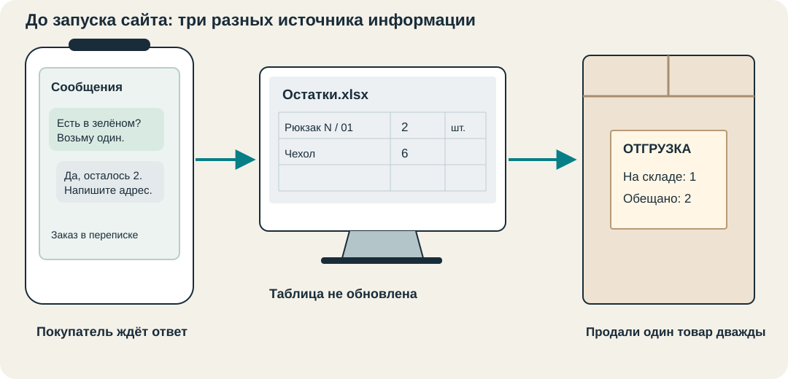
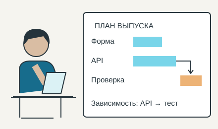
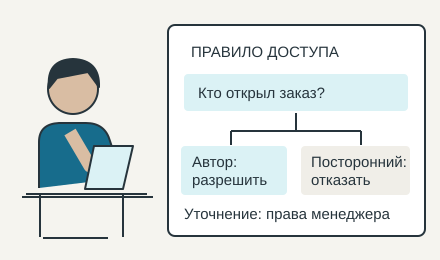
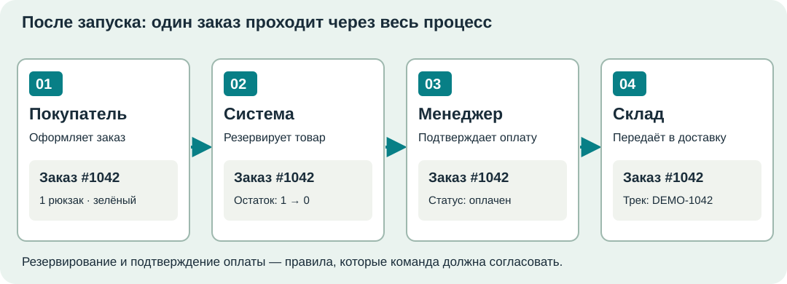
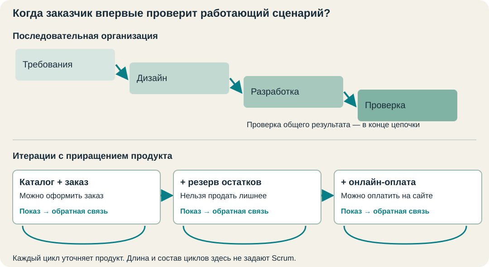
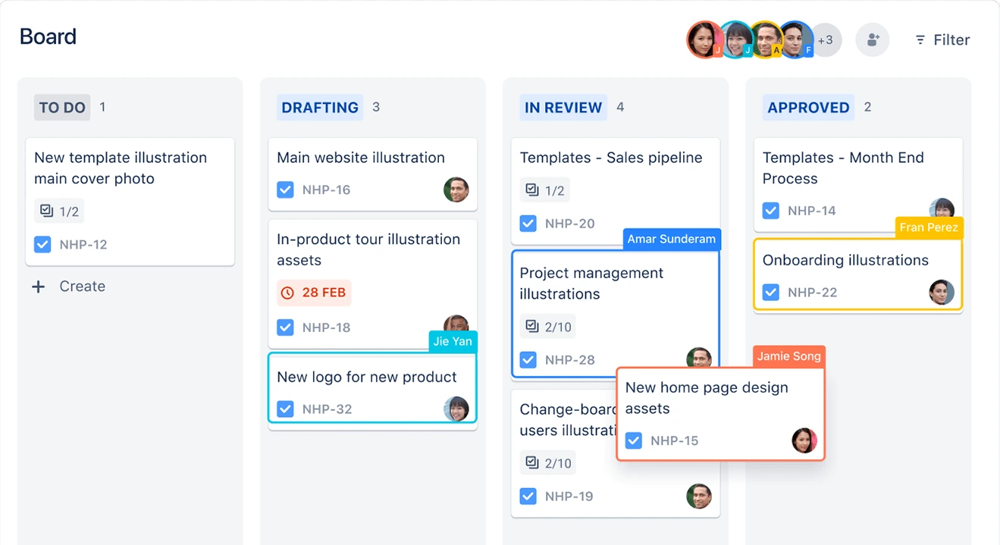

Product Manager
Что улучшать?
Выбирает оформление заказа раньше бонусной программы.
Результат: приоритеты и проверяемое предположение.Управление программными проектами
01 / 18 · 90 минут
Разбираем управление продуктом и проектом на запуске интернет-магазина: покупатель оформляет заказ, бизнес получает оплату, команда выпускает работающий сайт.
Для ноутбука, работы и поездок.
4 900 ₽Цвет: лесной зелёный
Остаток: 1 шт.
Выбор товара — начало покупки. Проследим, как заказ проходит через сайт, оплату и склад, и какую работу для этого организует команда.
Небольшой бренд продаёт рюкзаки через переписку. Менеджер записывает заказы вручную, склад ведёт отдельную таблицу. У каждого участника своя запись об остатке. Проследим на схеме, как из-за расхождения данных два покупателя получают обещание купить последний товар.

В переписке и таблице указаны два рюкзака, на складе остался один. Пока менеджер опирается на старую запись, он может подтвердить лишний заказ. Поэтому при разработке сайта нужно связать выбор товара, резервирование и исполнение заказа.
Ошибка с остатками задаёт цель разработки: покупатель должен получить заказанный товар. Для бизнеса это постоянная задача, а запуск сайта — ограниченная по времени работа. Так появляются два объекта управления: продукт и проект.
Продуктом здесь будет интернет-магазин, через который бизнес принимает и выполняет заказы. Проектом — работа по запуску его первой версии. В сравнении ниже слева показан результат покупки, справа — договорённости о выпуске сайта.
Бизнес проверяет пользу: проходят ли заказы, оплачивают ли их, возвращаются ли покупатели.
У проекта есть начало, завершение и уникальный результат. Срок и состав команды здесь заданы для примера.
Управление продуктом определяет, какие проблемы покупателей стоит решать. Управление проектом организует получение согласованного результата: работу, сроки, ресурсы и изменения.
Например, сайт выпущен в срок, но покупатели бросают корзину из-за стоимости доставки. Команда завершила согласованный проект, однако продукт пока не обеспечивает нужный результат. Продуктовый менеджер выясняет причину отказов и определяет, что изменить в оформлении заказа.
Чтобы выяснить причину отказов и выпустить исправление, нужны разные виды работы. Рассмотрим, кто определяет проблему, описывает решение и проверяет результат.
Чтобы покупка состоялась, нужно определить правила резервирования, спроектировать оформление заказа и реализовать проверки. Эти задачи требуют разных навыков. На карточках показано, какую часть работы выполняет каждая роль и какой результат передаёт остальным. Роли можно совмещать; названия должностей различаются между компаниями. На иллюстрациях API — интерфейс обмена данными, PR — предложение включить изменение кода.

Выбирает оформление заказа раньше бонусной программы.
Результат: приоритеты и проверяемое предположение.
Согласует срок запуска и зависимость проверки от готовности API.
Результат: план, ответственность, решения по препятствиям.
Описывает, кто может открыть заказ и когда резервируется товар.
Результат: требования и критерии приёмки.
Проектирует выбор товара, адрес доставки и подтверждение.
Результат: макет экранов и переходов.
Создаёт оформление заказа и проверку доступа.
Результат: изменение кода в репозитории.
Проверяет покупку последнего товара и доступ к чужому заказу.
Результат: отчёт о проверке и обнаруженные дефекты.Такие обязанности встречаются в вакансиях команд, создающих цифровые продукты для бизнеса. Два описания ниже связывают роли с электронной торговлей и доставкой. Публичные выдачи hh.ru и описания проверены 23.11.2026. В цифровых бизнес-продуктах встречаются электронная торговля, CRM — системы работы с клиентами — и SaaS: программные сервисы, доступные через интернет.
В описании: e-commerce — электронная торговля, B2B — продукты для других компаний, личные кабинеты и интеграции. Ответственность: сроки, бюджет и качество.
Открыть вакансию →Платформа для ресторанов: сайты, приложения, доставка и CRM. Задачи: интервью, бизнес-требования и пользовательские сценарии.
Открыть вакансию →Эти примеры подтверждают связь темы с бизнес-разработкой. Магазин рюкзаков выбран для наглядности; популярность этой товарной ниши не исследовалась.
Россия, все поля вакансии, любой опыт.
Это широкие запросы: CRM встречается как дополнительный инструмент, выдачи пересекаются и включают другие профессии. Сравнивать числа как рейтинг направлений нельзя.
Запросы, ссылки, время получения и тексты рассмотренных вакансий.
Вакансии также помогают сопоставить названия ролей с поиском работы. На диаграмме показано число результатов шести запросов. Это разные по широте запросы, поэтому сравнение показывает устройство поиска, а не востребованность профессий.
Общая шкала: от 0 до 4 506 результатов. Длина полосы пропорциональна числу результатов. Запросы и данные среза (JSON).
| Поисковый запрос | Результатов |
|---|---|
| Разработчик | 4 506 |
| Project manager | 2 610 |
| Тестировщик | 966 |
| Product manager | 886 |
| Системный аналитик | 623 |
| UX/UI дизайнер | 67 |
Это число результатов шести конкретных запросов, не весь рынок и не рейтинг востребованности. Поиск: Россия, название вакансии, любой опыт. Выдачи пересекаются, включают опытных специалистов и позиции вне IT. «Разработчик» шире, чем один вариант названия «UX/UI дизайнер». По этим числам нельзя оценить шансы начинающего. Данные и ссылки.
Описания вакансий показывают широкий круг задач, но в одном выпуске команда выполняет ограниченный объём. Для нашего магазина нужно выбрать возможности, без которых первая покупка не состоится.
До этого мы рассматривали отдельные обязанности. Теперь соберём их в сквозной сценарий — последовательность действий от выбора товара до отгрузки. MVP (Minimum Viable Product) — минимально жизнеспособный продукт для проверки предположений на пользователях. Здесь проверяем: готовы ли покупатели оформлять заказ на сайте бренда. На схеме ниже показано, кто участвует в выполнении такого заказа.

Заказ проходит через покупателя, систему, менеджера и склад. Резервирование защищает от повторной продажи последнего товара, а передача на склад запускает отгрузку. Поэтому в нашем первом выпуске нужны все эти шаги. Дополнительные возможности можно отложить, как показано в двух списках ниже.
Этапы жизненного цикла проекта: инициировать → спланировать → выполнить с контролем → завершить. На выходе остаются артефакты — зафиксированные результаты: требования, план и протокол приёмки.
Границы выпуска помогают оценивать новые пожелания. Если за неделю до запуска владелец просит добавить бонусы, команда оценивает работу и зависимости. Затем согласует перенос функции, замену части объёма либо изменение срока и ресурсов. Так изменение требований становится решением с понятными последствиями для плана.
Границы версии определяют состав работы. Следующий выбор — когда показывать результат заказчику и проверять предположения. От этого зависит, насколько рано команда сможет изменить решение.
При последовательной организации этапы в основном идут друг за другом — так обычно изображают Waterfall, каскадную модель. В итерационной разработке команда возвращается к работе короткими циклами. При инкрементальном развитии продукт получает новые работающие возможности. На схеме сравниваются два маршрута: общий выпуск после последовательных этапов и развитие магазина работающими приращениями.

Верхний маршрут связывает этапы подготовки общего выпуска. В нижнем сначала появляется заказ, затем резервирование и оплата. После каждого приращения команда получает обратную связь и уточняет дальнейшую работу. Готовность к публичному запуску проверяется отдельно от промежуточных демонстраций.
Agile — семейство гибких подходов: взаимодействие, работающий результат, сотрудничество с заказчиком и адаптация по обратной связи. Это не отменяет документацию и планирование.
Один из фреймворков, согласующихся с ценностями Agile, — Scrum. Он задаёт правила совместной работы и регулярной проверки результата. Рассмотрим цикл команды с целью дать покупателю возможность оформить заказ.
↻ Следующий спринт: развивать продукт с учётом полученного опыта
Спринт — цикл продолжительностью до месяца, внутри которого происходят показанные события. Планирование задаёт цель. На Sprint Review команда и заинтересованные стороны обсуждают результат и дальнейшие изменения. На ретроспективе команда разбирает свой способ работы. Полученное приращение должно быть пригодно к использованию. Для применения Scrum также нужны его ответственности, артефакты и обязательства.
Product Owner отвечает за ценность продукта и управление Product Backlog — упорядоченным списком работы. Developers создают пригодный инкремент. Scrum Master помогает установить Scrum и повысить эффективность команды. Daily Scrum — 15 минут для Developers: проверить продвижение к цели спринта и адаптировать план.
Цикл задаёт ритм, но внутри него задачи могут оставаться незавершёнными. Рассмотрим, как ограничение начатой работы помогает управлять потоком задач.
Начатая и ещё не завершённая работа — WIP (Work in Progress). На этой демонстрационной доске в работе уже две задачи при лимите два. Попробуйте добавить третью.
Пока нет завершённых задач.
Сначала попробуйте взять оплату, затем завершите каталог и повторите попытку.
Ограничение WIP помогает сначала завершать начатое и находить препятствия. Kanban — способ управления потоком с визуализацией, явными правилами и контролем незавершённой работы. Колонки сами по себе ещё не означают применение Kanban.
На доске видно состояние задачи, но для выполнения нужны её требования, код и результаты проверки. Разберём, как связать эти материалы и где их хранить.
Вернёмся к ошибке с последним рюкзаком. На схеме одно правило об остатках проходит через четыре записи: требование, задачу, изменение кода и результат проверки. По этой цепочке можно восстановить, зачем внесено изменение и как его проверили.
Трекер — сервис для регистрации задач и отслеживания их состояния. Репозиторий хранит код и историю изменений. Документ сохраняет требования и решения. Связь между ними позволяет понять, что реализовано и чем подтверждено.
Команда, задачи и сроки. Здесь начнём практику со второй пары.
Официальный сайт Битрикс24Настраиваемые задачи и процессы разработки.
Официальный сайт JiraКарточки и колонки для обзора работы.
Официальный сайт TrelloЗадачи, проекты и база знаний.
Официальный сайт YouTrackКод, его история, задачи и проверка изменений.
Возможности GitHubТребования, решения и документация.
Возможности NotionТеперь посмотрим, как рабочие записи выглядят в сервисах. В Trello и Jira задачи показаны на досках, в GitHub Projects — в таблице. На изображениях используются демонстрационные данные с официальных страниц.

Колонки To Do, Doing и Done показывают состояния задач. Карточка перемещается после выполнения согласованных условий.
Источник: Trello Guide: Trello 101. Обращение: 23.11.2026. Демонстрационные данные правообладателя.
В Trello видны три состояния задачи. Если работа требует отдельной проверки и согласования, процесс можно разделить подробнее. Следующее изображение показывает такой вариант в Jira.

В этом примере Jira между подготовкой и завершением есть проверка и согласование. Названия стадий команда задаёт под свой процесс.
Источник: Atlassian: Jira Features. Обращение: 23.11.2026. Демонстрационные данные правообладателя.
Доска группирует задачи по состояниям. Для просмотра нескольких полей каждой задачи подходит таблица. На следующем изображении GitHub Projects статусы и назначенные участники расположены в соседних столбцах.

В GitHub Projects один элемент занимает строку. Статусы и участники видны рядом; изменения кода хранятся в репозитории.
Источник: GitHub: Issues and Projects. Обращение: 23.11.2026. Демонстрационные данные правообладателя.
Эти интерфейсы помогают хранить и просматривать работу. Способ организации задают договорённости команды: выбор Jira сам по себе не определяет применение Scrum. Для Scrum нужны предусмотренные им ответственности, события, артефакты и обязательства.
Связанные записи позволяют найти задачу и её реализацию. Теперь нужно подтвердить, что реализованное правило устраняет ошибку с остатками. Для этого зададим проверяемое условие покупки.
Критерий приёмки задаёт проверяемое условие для конкретной функции. Для остатков: если рюкзак один, два покупателя не должны одновременно получить подтверждённый заказ на него. Ниже одинаковое исходное условие сопоставлено с ошибочным и ожидаемым результатом.
Два покупателя оформляют его одновременно.
Магазин обещал два товара при остатке один.
Обновить корзину и не принять лишний заказ.
В обоих вариантах два покупателя оформляют один товар. Ошибка подтверждается двумя принятыми заказами; ожидаемый результат — один резерв и сообщение о недоступности для второго покупателя. Проверка должна воспроизводить одновременное оформление, потому что последовательные покупки могут скрыть дефект.
Эта проверка относится к конкретному правилу об остатках. У команды есть и общие требования к качеству всех выпускаемых изменений. DoD (Definition of Done) описывает общие условия качества инкремента: например, обязательные тесты пройдены, код проверен другим участником. Критерии конкретной функции и общие условия качества проверяются отдельно.
Проверить связь оплаты и заказа, получение уведомления от платёжного сервиса и смену статуса. Аналитик уточняет правила, разработчик проверяет реализацию, тестировщик воспроизводит сбой и проверяет исправление. Подтверждение — воспроизводимый сценарий и результаты проверки; одинаковое повторное уведомление не должно создавать второй заказ.
Управление связывает пользу для бизнеса, договорённости команды и доказательства результата. Со второй пары начнём организовывать проект в Битрикс24: участники, задачи и условия готовности. Регистрация сегодня не требуется; на дисциплину отведено 18 пар.